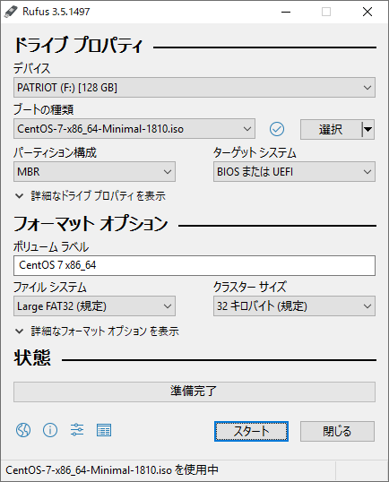

centOS7 Minimalのダウンロード
以下サイトからダウンロード
Rufusのダウンロード
以下サイトからダウンロード
- https://rufus.ie/
- Rufusの起動
↓画像と同じ設定（centos７の.isoを指定）にする 
- 右下のスタートボタンをクリック
Linux（予定）機にUSBを挿してboot
- F12を連打
- Install CentOS7を選択
- 日本語を選択→続行
- インストール先→インストールするディスクを選択→パーティションを自動構成するにチェック
→追加の空き容量を利用できるようにするにチェック→データを暗号化するにチェックしない - 完全なディスク要約とブートローダー→ブートデバイスになっているか確認 →閉じる
- 完了 →領域の再利用
- 言語サポート→日本語→完了
- ネットワークとホスト名→適当な名前→オン←①（ここで固定IPにしておく手もある）
- 設定→全般→この接続が利用可能になったときは自動的に接続するにチェック→保存→完了
- 日付と時刻→アジア＆東京→完了
- インストールソース→自動検出したインストールメディア→完了
- ソフトウェアのインストール→最小限のインストール→完了
- KDUMP→kdumpを有効にするのチェックを外す→完了
- セキュリティーポリシー→そのまま
- インストールの開始
- ROOTパスワード→rootpass→完了→完了
rootpassは任意のもの - ユーザーの作成→user→userpass→このユーザーを管理者にするにチェック→完了→完了
※userとuserpassは任意のもの - 再起動
- login:root
- password:rootpass
インストールの開始で作成したパスワードを入力 - yum update→ｙ→ｙ
ipアドレスの固定（変更）:有線の場合
- ネットワークインターフェース名の確認
- nmcli d（インターフェース名：enp3s0f2など）
- インターフェースを有効化
- nmcli c m enp3s0f2 connection.autoconnect yes
- IPアドレス、サブネットマスクを変更
（ipアドレスはDNSのアドレス、xxx.xxx.xxx.yyyのyyyを空き番に設定する） - nmcli c modify enp3s0f2 ipv4.addresses 192.168.71.172/24（/24はサブネットマスク255.255.255.0の意）
- デフォルトゲートウェイを設定
- nmcli c modify enp3s0f2 ipv4.gateway 192.168.71.1（デフォルトゲートウェイのアドレスは使用しているものを入力）
- DNS設定
- nmcli c modify enp3s0f2 ipv4.dns 192.168.71.1（DNSのアドレスは使用しているもの）
- IPアドレスを固定割り当てに設定
- nmcli c modify enp3s0f2 ipv4.method manual（DHCPによる自動割り当てに戻す場合はmanual→autoにして実行）
- インターフェースを再起動（終了/起動）して設定を反映
- nmcli c down enp3s0f2; nmcli c up enp3s0f2
- 設定確認
- nmcli d show enp3s0f2
- 接続確認
- ip addr
- ネットワーク再起動
- systemctl restart network
- 設定ファイル確認
- less /etc/sysconfig/network-scripts/ifcfg-enp3s0f2
上で設定した中身になっているか確認
（lessコマンドについては https://qiita.com/sion_cojp/items/04a2aa76a1021fe77079 参照） - DNSに対してpingしてみる
- ping 192.168.71.172
ipアドレスの固定（変更）：無線の場合
- Wifiのインターフェース名の確認
- nmcli d (インターフェース名（無線の場合）：wlp2s0など)
- nmcli radio wifi (wifiはenabled（有効）になっている)
- wifi用プラグインパッケージの情報を表示させる
- yum info NetworkManager-wifi
- ※表示されない場合はインストールする
- yum install NetworkManager-wifi
- NetworkManagerサービスを再起動する
- systemctl restart NetworkManager.service
- 周辺のwifi情報の表示
- nmcil dev wifi list
- NetworkManagerがwifiインターフェース（wlp2s0）を使用しているか確認
- systemctl status NetworkManager.service(infoタグの後に(wlp2s0)：と表示されていればOK)
- wifiアクセスポイントに接続するための接続情報の作成
- nmcil con add con-name wlp2s0 ifname wlp2s0 type wifi xxxxx
(con-nameは接続名なので任意の名前。ifnameはデバイス名（nmcil dで調べた名前）上記のように同じでもよい) - 接続情報の確認
- cat /etc/sysconfig/network-scripts/ifcfg-wlp2s0 (ESSID:xxxxx DEVICE:wlp2s0になっていればok)
- 接続情報にセキュリティーモード、パスワード追加
- nmcli con modify wlp2s0 wifi-sec,key-mgmt wpa-psk
- nmcli con modify wlp2s0 wifi-sec.psk WIFIpass (WIFIpassには使用しているwifiのパスワードを入力)
- 接続確認
- nmcli con up wlp4s0
- ipアドレス固定（有線の場合）の ipアドレス・サブネットマスクの変更から
設定ファイル確認
（less /etc/sysconfig/network-scripts/ifcfg-wlp2s0）までと同じようにipアドレスやDNSなどを設定する。 - 接続を再度確認
- nmcli d ※wifiがdisconnectedになっている場合、再度nmcli con up wlp2s0を行う
- DNSに対してpingしてみる
- ping 192.168.71.172
SSHの確認
（同一ネットワーク上の他の端末から行う：持ち込み端末の場合はipv4の設定をサーバーに合わせた設定にする）
- ssh -; root 192.168.71.172
- password:rootpass
インストールの開始で作成したパスワードを入力
httpdサーバーの導入
- yum install httpd→yと応答 (yum -y install httpdでもよい。その場合は、yは自動応答)
- (yum -y install mod_ssl)
- 自動起動設定
- systemctl enable httpd/service
- firewallの設定
- firewall-cmd --get-active-zone
(firewalldが動いていない場合、systemctl start firewalldとsystemctl enable firewalld) - firewall-cmd --add-service=http
- firewall-cmd --runtime-to-permanent
- firewall-cmd --list-services（確認）
- vi /etc/httpd/conf/httpd.conf （エディタで修正）
- ServerAdmin 管理者のメールアドレス（任意）
- ServerName サーバー名（任意）
- 標準設定でドキュメントルートは/var/www/htmlになっている
FTPサーバーの導入
- yum -y install vsftpd
- 自動起動設定